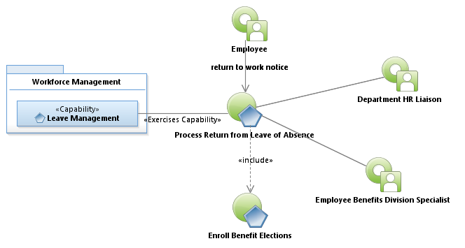
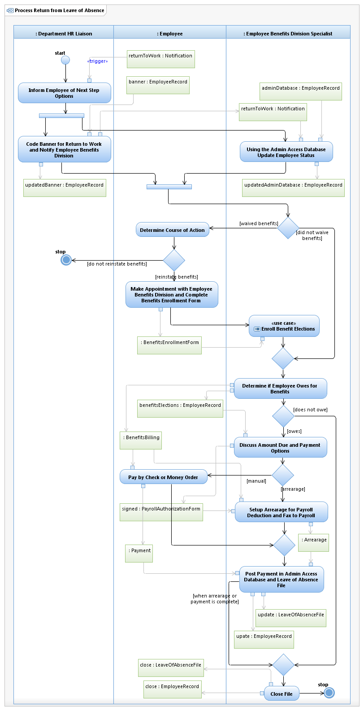

Use Case Model: Process Return from Leave of Absence
Architect: Rob Byrd, Chief Enterprise IT Architect
Date Last Modified: 03/08/2013
User Review: Shannon Flett, Shelly Sheppard, Linda Escamilla
Date: 03/08/2013
Benefits Specialist, are notified that employee has returned from leave of absence or termed employment with the city. If employee returns to work and waived benefits, they complete a Benefits Enrollment Form reactivate benefits if any or all were waived while out on leave. If employee owes for past due premiums the money are collected when they come in to reactivate premiums or a Payroll Agreement Form is submitted to payroll to collect past due premiums out of future payroll checks.
Follow link to Role Definitions

Use Case Model: Process Return from Leave of Absence
Follow link to Enroll Benefit Elections

Activity Model: Process Return from Leave of Absence